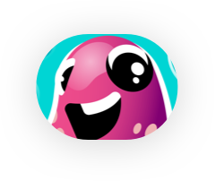
Livening iMessage Chats, One Animated Character at a Time
Personal Project
iOS Sticker Pack
Stickers the Squid is an animated sticker pack created for iMessage, Apple’s chat platform that works with iPhone and iPad devices. This project in its entirety was conceived and executed by me. My mission, to test the limits of my creativity
and technical ability. Bottom line, this is one of my most diverse undertakings, and it paid off in many senses of the word!
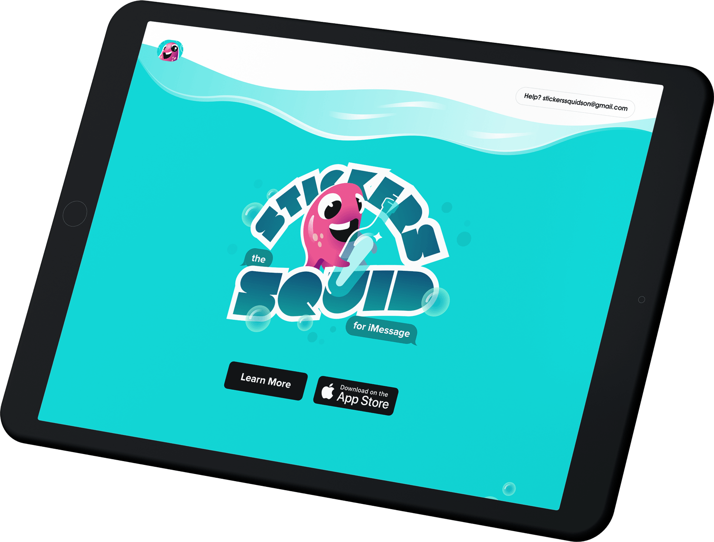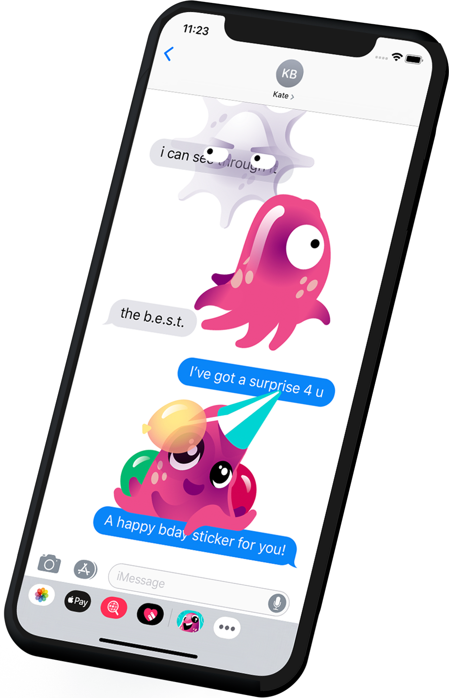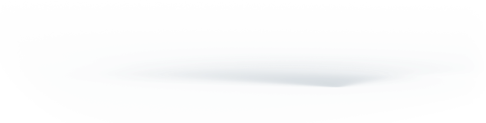
The impetus for creating Stickers the Squid was to sharpen my skills as a designer (who also dabbles in development.) And since skills are cumulative, I knew I’d be able to apply everything I learned to new client work going forward too.
Admittedly,
my intentions weren’t entirely singular. Aside from the benefit of keeping my illustration and animation skills sharp, or getting to dive head first into Xcode for the first time, I planned on making a few bucks by selling the sticker
pack on the App Store.
I ended up pushing the limits of my creativity and skills and created a spectrum of assets that brought this project to successful completion.
Kids!—as you may have expected. Although, I’d be thrilled to reach any person who’s willing to pay to download this sticker pack. At the same time, I understood it would have a greater chance of gaining interest by not trying to cater
to everyone.
- Kids aged 6-14 (probably girls)
- iPhone and iPad users
- Autonomy to make purchases
Illustration
My plan of attack was to start with the items that I’d sell on the App Store. But instead of jumping straight in and being caught off-guard later by technical requirements or limitations that Apple imposed on sticker packs, I’d do some prelimary
fact-finding to make sure my app had the best chance of success.
Deciding what to illustrate
In case you didn’t know, cats rule the internet, and the App Store. Even the most basic search I performed revealed no shortage of cat-themed sticker packs. But I get it. Something must be working if there are so many stickers in a particular
category. Yet, I decided I’d break form and create something different since organic sales on the App Store are exceedingly difficult to come by these days. This way, I’d at least have the opportunity to stand out from the pack in
one small way from the jump.
I also wanted to make sure I had a thorough understanding of what was required from a technical standpoint. I’d use this information to narrow down my approach. The most useful requirements/information
I discovered were:
- Animated sticker packs have a higher likelihood of selling
- Each sticker needed to be under 500k in filesize
- At least 24 stickers in a pack are ideal
Inspiring levity
Armed with this information I was ready to get started. A variety of the projects I’ve worked on in the past called on custom graphics, iconography, or illustration of some sort. I used the skills I’d built up over the years to hone in
quickly on the best illustration style. I knew I wanted to:
- Emphasize features like eyes and limbs to allow greater opportunity to animate.
- Create a gender neutral character in an effort to appeal to boys and girls.
- Use limited complementary colors to catch the eye when people are skimming the App Store.
- Illustrate in a semi-flat style to minimize file size.
All in all there are 24 animated stickers. Below, get a glimpse of a few more select options:
Creating a key visual and app icon
Being careful not to think of it as a logo (which has an entirely different set of requirements,) I created a graphic that’d be used as a key visual on the App Store and promotional website etc. I selected one of my favorite stickers and
surrounded it with descriptive text. I went through a couple concepts before I landed on one I thought worked well.
The app icon was simply a crop of one of the illustrations. I modified it to read clearly at small sizes and
both in a rectangle or square format.
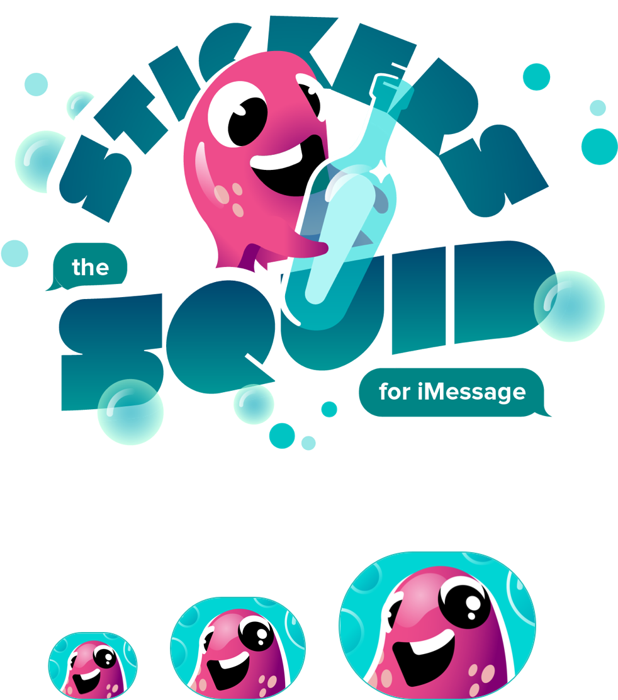
Animation
With the illustrations complete I imported the graphics directly from Adobe Illustrator as native .AI into Adobe After Effects.
Finding a happy medium
Thinking back to the earlier research I had done, I knew I needed to keep the animations under 500k each. This meant limiting the overall dimensions of the animation and reducing the number of frames per second. I found a happy medium
between frame rate and animation smoothness at 13 frames per second.
I also capitalized on the theme of the illustrations by using a combination of timeline-based techniques and scripting to achieve a wavy or watery effect on
the squid’s limbs.
408px X 408px, 1 second loop at 13 FPS, timeline + script-based animation
Discovering a rising filetype
Sticker packs support animated gifs, but one of the main problems with that file format is that it has a limited color palette and doesn’t support transparency well. In the case of this sticker pack, color and transparency are key components
of the overall theme.
After a bit of research I discovered a little known filetype called APNG, which stands for Animated Portable Network Graphic. APNG supports a full color range as well as better transparency. The downside
however is that the more color and transparency used in an image the greater the filesize.
After exporting an image sequence from After Effects I used a mismash of techniques to compress the images even further and recompile
them into a single APNG that met Apple’s requirements.
With animations complete and exported, I was ready to get working in Xcode!
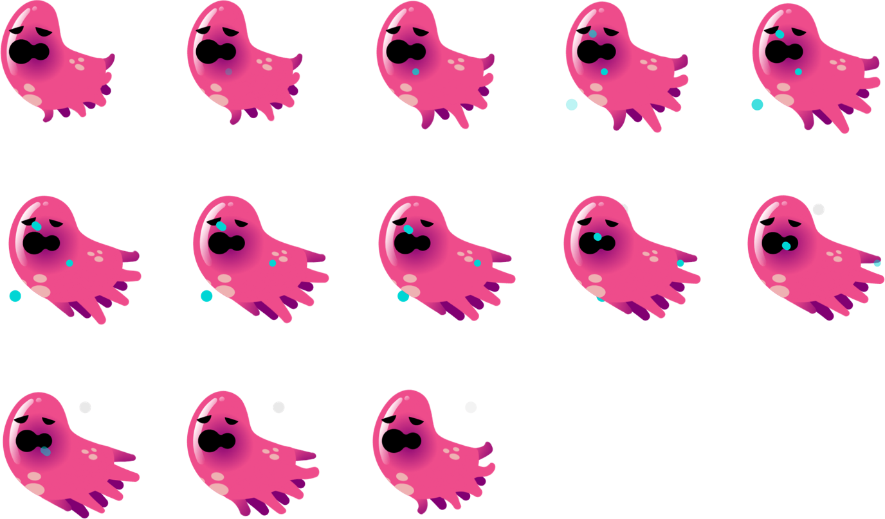
Individual transparent PNGS assembled into Animated PNG (APNG)
Development
I’ve designed many apps over the years but app development was brand new to me. Surprisingly, this phase took less time than I expected, clocking in at around 1.5 weeks.
Getting my feet wet
Even though Apple promoted creating and selling a sticker pack as a simple exercise I quickly learned that wasn’t the case. I took to the internet to see what information I could turn up that might help get the ball rolling. I stumbled
across a range of tutorials that helped in one way or another including YouTube videos and Medium articles.
I even came across an Xcode template that was created solely for selling sticker packs on the App Store—but I decided
I’d go through the experience of creating my sticker pack from scratch and learning a thing or two along the way.
Diving deeper into the experience
As I began working in Xcode I took advantage of one of it’s most notables features—an iPhone simulator. The simulator allowed me to test how the sticker pack was working. I used the simulator as well as added the sticker pack app to my
physical device so I could test on screen and in hand.
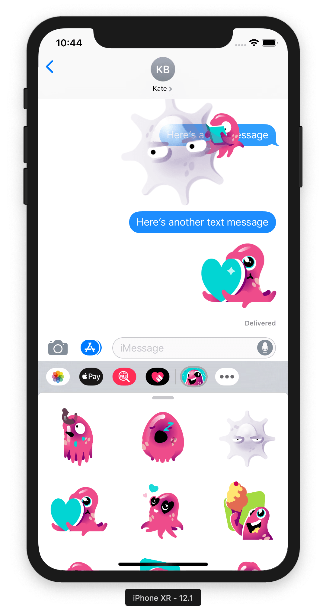

Soaking it all in
Xcode has its share of foibles and nuances to overcome in order to create a sticker pack, but it wasn’t that hard once I knew where to click. After all, this wasn’t a task that required writing code by hand. To summarize the process I:
- Downloaded and installed Xcode (5 gigs O_o)
- Watched YouTube and read Medium articles to learn the basics of Xcode
- Tested the sticker pack along the way via the simulator
- Created my Apple Developer Account and membership
- Established marketing screens and uploaded the sticker pack
- Configured App Store settings and submitted the pack for sale
After that, it was just a matter of waiting for my app to be approved!
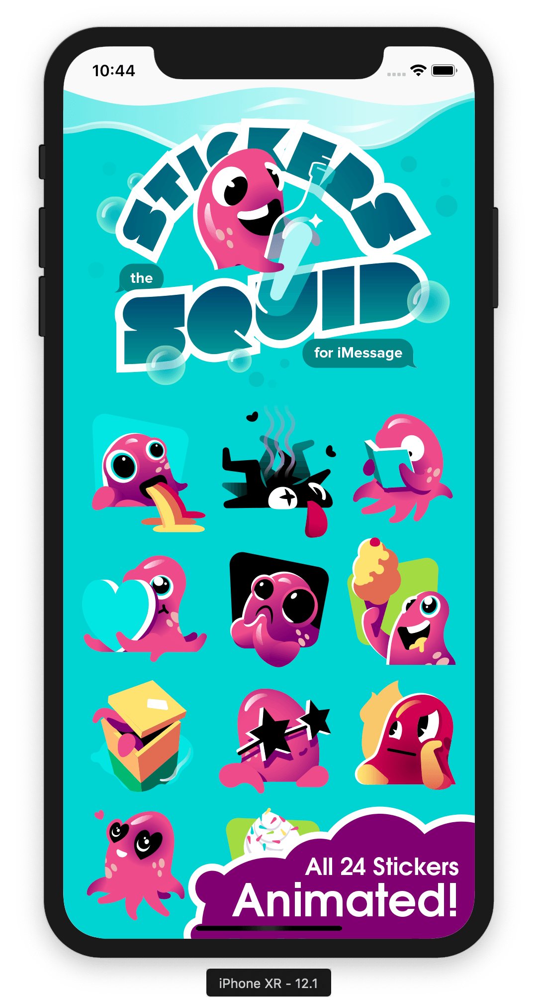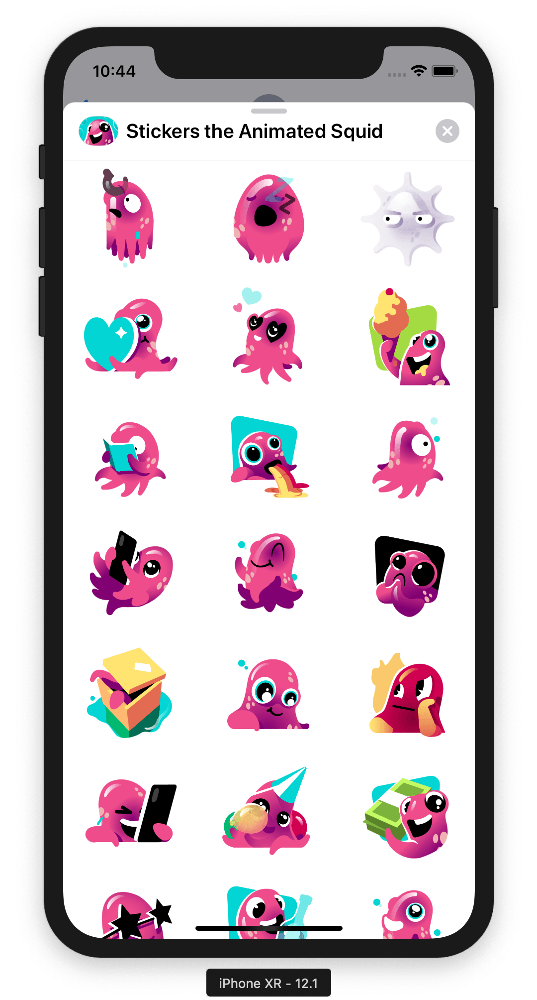
Promotional Website
While I waited for the sticker pack to be approved I moved quickly to designing the marketing website. I didn’t want a delay between having the sticker pack approved and potentially miss out on organic traffic that may have resulted from the website.
How it all comes together
The promotional website has two main functions. First, it’s used to inform users of the benefits of purchasing this sticker pack. And second, as instruction on how to install the sticker pack once a user has purchased it. Interestingly,
Apple spends little resources even letting their customers know what sticker packs are, so the user experience here had to pick up the slack.
I placed the Download on the App Store badge adjacent to the Learn More call to action
so there would be absolutely no missing the purpose of the site.
Thematically, my intention was for the site to mirror a true chat exchange. In that event, I devoted the rest of the user experience to alternating text bubbles
interspersed with sticker examples on the left and right edge of the layout accordingly.
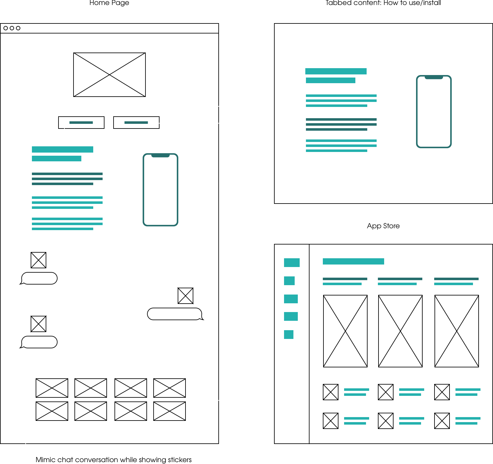
Making a visual statement
Stickers is a squid so naturally I pictured an immersive water-themed user interface design to really get viewers in the spirit of things when they landed on the site. To that end, I let the key visual set the stage in the header area
and illustrated large waves that spanned the entire width of the site (I knew I’d animate those once I was ready to develop the site.)
It was also important to me that I create a separation between the stickers themselves and
UI elements that are purely there to enhance the site design. I didn’t want any confusion surrounding what was or wasn’t included with purchase. Subsequently, website design elements were muted and pushed to the background while the
animated stickers were the only items shown in full color.
Optimizing for mobile
Given the target market I was after I knew this site would most often be viewed from a mobile device. I put my focus squarely on that experience and created a design that echoed the purpose of the sticker pack—allowing the chat-inspired
layout to really take shape in that context!
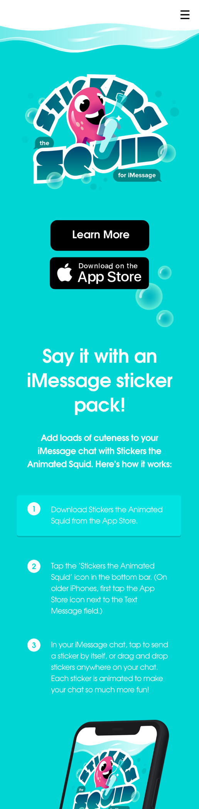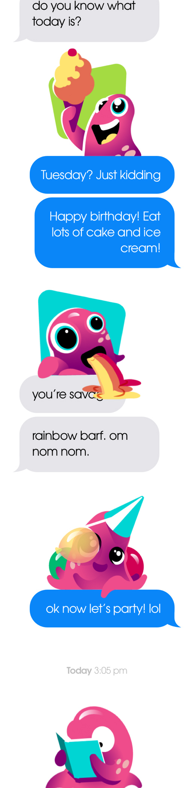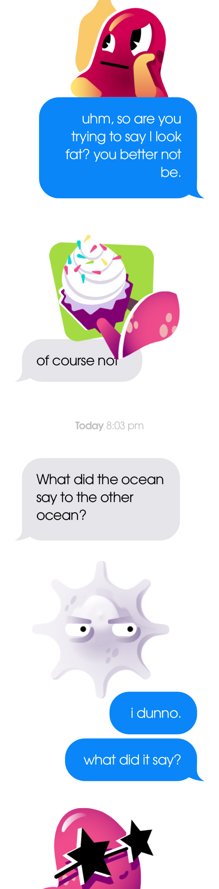
In a manner of speaking
Finally, it was time to bring the whole project together and develop the site. I used a software called Webflow. And while I don’t market myself as a developer, when appropriate I enjoy developing my projects so that I can be as picky
as necessary and obsess over every pixel (or vector) until they’re perfect.
To really bring the site to life I incorporated a combination of APNGs, interactions, and transitions.
For example, the waves at the top of the
site were created in After Effects and brought in as an APNG. I was quite resourceful in pulling off the key visual animation. The squid, text, and bubbles in the header graphic are a mix of APNG and code-based animation. I merged
these technologies together for a few reasons ranging from code-limitations to being cognizant of not increasing the file size of graphics without good reason.
I also added a couple interactive easter eggs into the hero section
that kids could stumble upon while browsing the site. (hint: click the logo or any of the large bubbles, if you can catch them!)
I rounded out the website development with a hard nod to iMessage. As the user scrolls the page
each sticker and chat bubble slides upward and fades in.
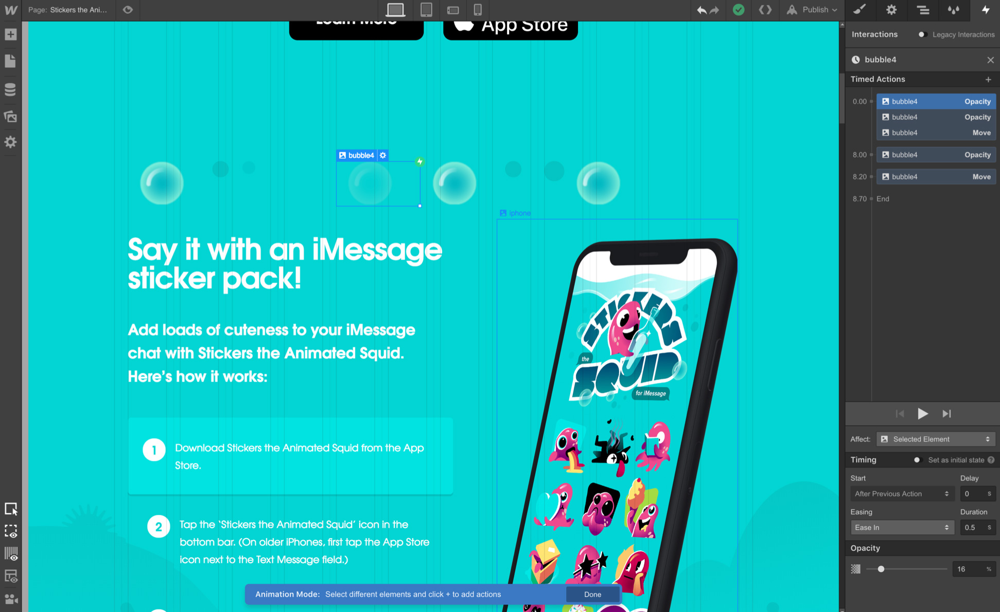
Hindsight
All-in-all the process of illustrating, designing and developing everything from scratch was enlightening and one of my favorite projects. As it would turn out, the market for animated sticker packs was not as strong as I imagined. Since Apple
charges developers a pretty substantial annual fee to list apps on the App Store, I decided to remove it as the cost to list it exceeded the proceeds I was earning.
Biggest challenge
Xcode is hard to jump straight into. I ran into multiple issues just trying to test and upload the app to the App Store. On the plus side, the app was accepted to the App Store on the first try! So I had that going for me, which was nice.
Best lesson
Discovering a whole new filetype—APNG. While APNG isn’t new, it’s not widely used because browsers and devices don’t all support it yet, but that’s changing and adoption is increasing steadily. Even though it’s a fairly low-tech instrument,
its implications are wide.